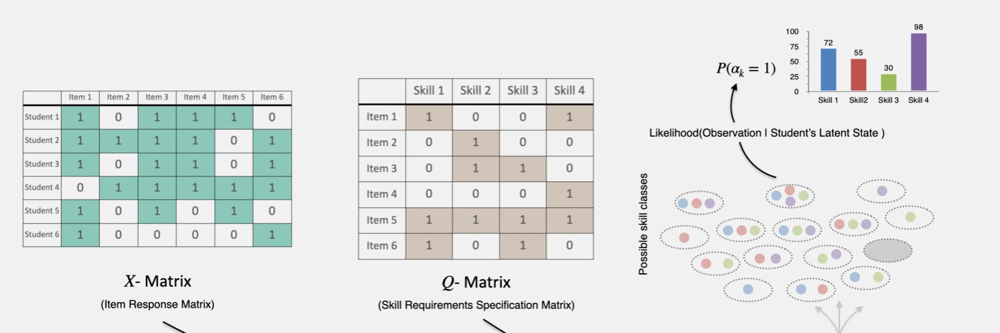
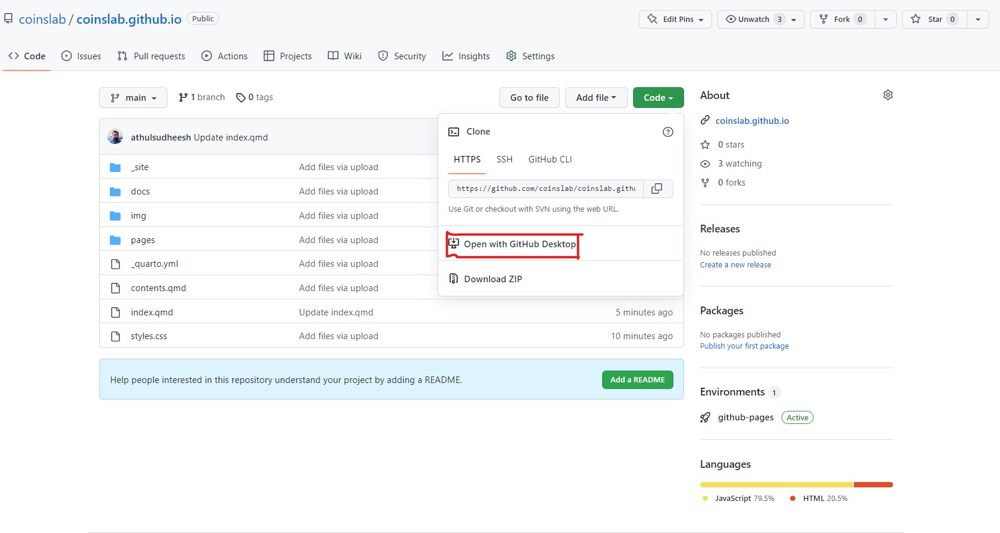

COINS Lab Wiki

Welcome to COINS Lab Wiki. COINS Lab Wiki was setup to consolidate all the tutorials, tools, and resources, that would be helpful for both current & future members and collaborators, at one place.
This wiki was initially set up on February 18, 2022 by Athul Sudheesh using Franklin.jl (A Julia based static site generator). This was later moved to Quarto (A more advanced and easier open-source scientific & publishing system) on July 14, 2022.
Contributing to this Wiki
If you want to direclty contribute to this wiki, you need to familiaze yourself with how to use the Quarto publishing system and the synatx for makrdown files. The documentation for Quarto can be found here and markdown syntax here.
Working with Github
First time users
Setup your GitHub account (if you already haven’t) and share your GitHub ID with the Principal Investigator or one of the senior PhD students in the lab. Inform them of your interest in contributing to the lab wiki. Either the PI or one of the senior PhD students will add you to the wiki repository as a contributor.
Install Github Desktop and link it with your Github profile.
Go to https://github.com/coinslab/coinslab.github.io and click on Code -> Open with Github Desktop

This should create a clone of the Knowledge-Base repository in your local machine.
Now you can go to the file location in your computer where you have cloned the
coinslab.github.iorepository.You can create contents for this site as a Quarto Markdown file(.qmd) inside the pages folder in
coinslab.github.io. You can use VS Code to create and edit the.qmdfiles.Once you are done with writing/updating your section, you can commit your changes and push the changes to the Github using your Github Desktop client. Now inform the Senior Investigator who is in charge of this site. He/She will build and publish the updates
Experienced users
- If you are not contributing for the first time, always fetch from the cloud and make sure everything is in-sync with the cloud, before beginning to work on the documentation.